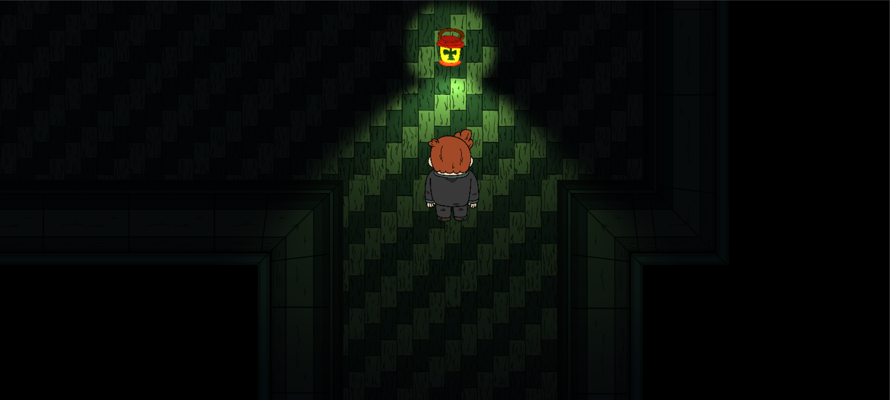
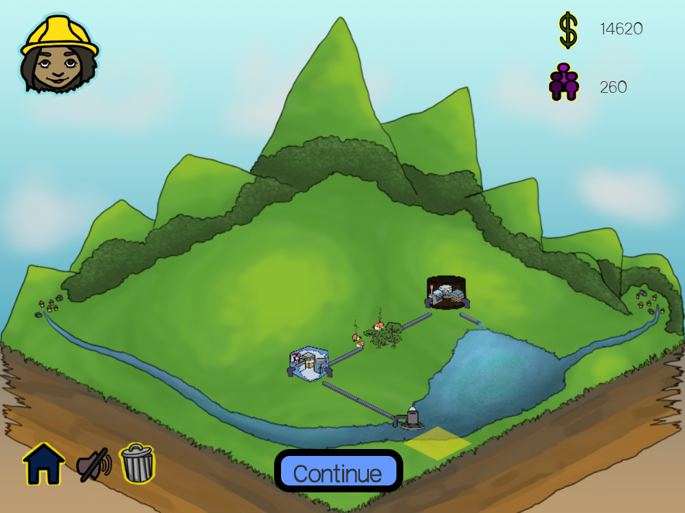
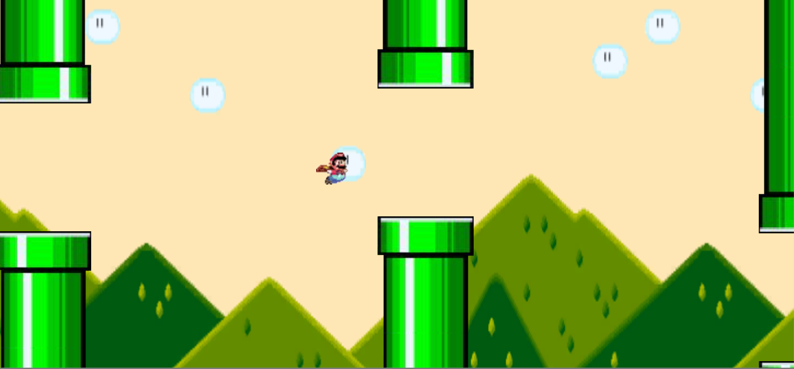
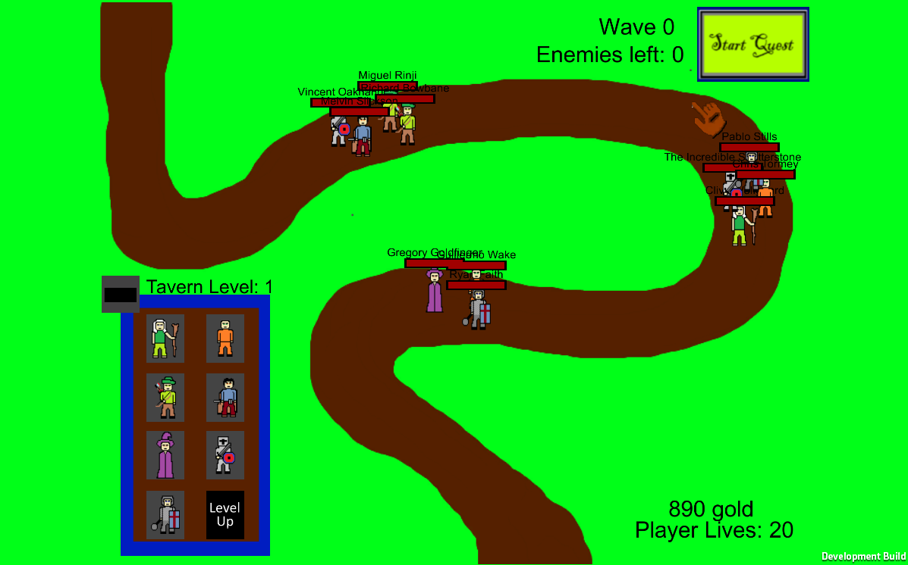

My Work
Katabasis
×Katabasis is the Greek word for descent as in to descend into a cave. A classic examples is Odysseus’ descent into Hades. Symbolically it means a hero’s journey to the underworld. For this game it stands for the characters progress through the five stages of grief. For our main character this world appears in his dreams as a manifestation of his grief. He must travel downward from each stage to the next until he finds Acceptance.
Originally I wanted to Katabasis to be a simple title that I could develop by myself in a short period of time. However once I pitched it and some other games to Hoosier Games, many people expressed interest in working on it. So the team grew from one to seven. We held weekly or bi-monthly meetings to coordinate the art, music, programming, and design. During meetings we would prototype level concepts on a white board and shape it to what we like, we would also sketch existing levels in an effort to redesign them.
The game changed form significantly three months into development to accommodate new mechanics in different colored lights corresponding to certain stages that act as character abilities for solving puzzles. Actually having these more precise puzzle solving methods made it easier to design the puzzles. This by far was the most challenging aspect of Katabasis. It was not communication it was designing engaging, intuitive, and interesting puzzles that fit into the physical level and emphasized the level design style as well.
After two full semesters of development the team disbanded to work on other projects while I’ve been slowly finishing Katabasis. Often I’m caught up in school and work but I’m also unskilled in writing shaders. That is one of that last things Katabasis needs to be finished.


Katabasis is a puzzle based adventure game with a whimsically dark style taking the players through the five stages of grief.
• Platform: PC
• Status: Unreleased
• Role: project lead, designer, programmer
• Tools Used: Unity3D, Github
• Collaborators: 6 others
• Production Time: 2+ years &
• Personal Time: 100+ hrs.
• Links:itch.io page, download, browser play
Water Works
×WaterWorks was conceived as a research project through the Attari Lab at IU. The goal was to understand what people do and do not know about how water gets to their house and where it goes after. In addition by playing the game people were to learn more about what makes an effective implementation.
I was brought in after the original programmer left. I didn’t know JavaScript before I started this job but because Mike Sellers, who is on the team, had worked with me before they hired me anyways. It took me a few weeks to learn the JavaScript and the existing code. A few months to feel comfortable making large changes. The basic logic for a world with a 10x10 grid of squares that can be built upon existed. There were already most of the in-game structures and the logic controlling the artificial flow of water implemented. However the direction of the game needed to be evaluated.
First the UI was overhauled to make it less complicated. To help another programmer was hired who took on most of the UI tasks. I reworked the menus, added music, and wrote functions to use cookies to save player progress on their machine. After this our XML language was expanded to allow more flexibility in the maps they generated for players.
My largest task for this project was re-writing the water flow logic. To simulate the flow of water between our pipes and structures, certain formulae were created to allow. During implementation these had to be tweaked to accommodate certain constraints. After several attempts I wrote a group of functions that explore the water network starting from the highest upstream point, a source. This game is still in production but I’m no longer attached. I left a design doc for the team to understand my code that can be provided upon request

WaterWorks is simulation game putting players in control of water infrastructure to supply a growing community. Players should walk away with better understanding of modern water purification and distribution.
• Platform: Web
• Status: unfinished
• Role: programmer
• Tools Used: Unity3D, Github, XML, Slack
• Collaborators: 10+ others
• Production Time: 3+ years &
• Personal Time: 100+ hrs.
• Links: play here
Zero Wing
×I was contracted by Seven Jets Games to develop this game in a month. Max, my contact at Seven Jets, told me the game was a sidescrolling shooter that grew in difficulty for four minutes. At four minutes it was supposed to be extremely difficult for the player to survive. First I was asked to propose a plan for development over the 30 day work time. I sent my proposal and immediately began working after getting the ‘ok’.
Immediately I started with the player character. The next day I was given most of the art, sound effects, and UI. In favor of creating a Minimum Viable Product before following my proposal exactly I added some of these basic art assets. Next I designed and programmed several enemy behaviors. By the end of the first week I had the player character, the scrolling background, and three enemies in the game. Because of our time difference I provided updates to Max in small videos with commentary detailing each aspect of the game I had worked on. He provided feedback and I adjusted my work around it.
Planning the enemy spawning system was the first thing I started in week two. Since the difficulty had a cap at four minutes I used the game’s run time % 240 seconds to derive what ratio of four minutes the player has survived. I generate a number proportional to this value and run it through a switch of enemy values. Each enemy has a value from 1(easiest) to 100(most difficult), the highest enemy value smaller than the rolled number is deducted from the roll and I go back through the switch again til the role is 0. After getting most of this done I finished the rest of the enemies to test the spawning more thoroughly.
Week three’s priorities were re-doing the scrolling background and adding music which took little time. With all of the enemies in place it became much easier to finish the spawner and debug enemy behaviors. My last day of development I finally got an android device to deploy and test on and I finished all of the UI that day. Then I prepped the Google Play store for release and sent my most current build along to Max.


Zero Wing is an infinitely horizontally scrolling shooter that grows in difficulty til it's almost impossible after 4 minutes.
• Platform: Android
• Status: released
• Role: programmer
• Tools Used: Unity3D, TinyTake, Dropbox
• Collaborators: Max Randall
• Production Time: one month
• Personal Time: 35 hours
• Links:Google Play, download, browser play
Schmup
×Schmup was the first game I finished at Plow during my internship. After about a week of working on a myriad of game demo’s my supervisor asked me to make something with a Sample Project, so I took all the art and sounds and started a new project. The first thing I worked on was creating the player character, then programming and refining movement. To make things interesting I wrote an attack function for shooting projectiles. This took some effort as it was my first time working with generating projectiles, propelling them in the desired direction, and then reacting with the proper behavior.
This is when my supervisor stepped in and had me learn xml so I could create adjustable files for the waves of enemies in the game. So we implemented an XML reader and wrote “waves” in the xml that are numbered and would be randomly spawned when ready. The whole thing runs on an object pool that recycles the background tiles and enemies while the player character flies forward.
One thing that was in the sample project were asteroids, I added these and had them damage the player and enemies on hit. At this point the character was dying very quickly so I gave them a three-hit health bar and temporary invulnerability after getting hit. To provide some more layers to the combat I gave the asteroids a random chance to explode over a decent radius. As I had hoped this could chain and wipe out a wave of ships, asteroids, and all. This could also unexpectedly hit the player, to counter this I gave the character a regenerating shield.
Now all that was left was to give it some more features like lives which I called “Reassemblies” so as to give in-game meaning to the unrealistic ability of a spaceship to be graced by god with another life, good as new. I call them reassemblies to allude to some sort of futuristic technology that allows the ship to re-assimilate after too much structural damage, the caveat being limited uses (like lives), using nano-technology. Then I added a score system to give some sense of progression for each run.


Schmup is an infinitely scrolling vertical shooter centered around the intrepid protagonist running into an endless army of Schmups.
• Platform: PC
• Status: Unreleased
• Role: designer, programmer
• Tools Used: Unity3D, XML
• Collaborators: none
• Production Time: 2 weeks
• Personal Time: 30 hours
• Links: download, browser play
Mario Bird
×The game I have retro-actively dubbed “Mario Bird” is a project that I was asked to do at Plow. What they really wanted was something like FlappyBird to be added as a mini-game to the already-released Endless Blitz. However since its something I can conjure in a few hours I decided to have fun with it and tailor it to my supervisor’s affection for Nintendo.
While relatively simple to make it requires an intelligent approach as much as any game. In this game where the character physics determines not only how it feels to play but also how challenging it is. So the very first thing I did was program a ballot always move forward and have some gravity to fall. Then I made it so it jumps when you tap. I took some time to fine-tune the falling speed, jump height, and the acceleration from the jump. Then I started working on an object pooling system for the in-game obstacles.
This part provided some challenge in having random heights and fixed spacing without being nearly impossible. In beating that challenge though I created obstacles that are challenging enough to end a run but never impossible to pass. The object pool creates all of the obstacles which are pairs covering the top and bottom. They are always created at a certain distance but the heights are adjusted so the passable gap varies randomly. Since the character is always moving forward once the obstacles pass out of the camera’s view they are prepared for the next placement.
After all of this I spent more time adjusting colliders, gravity, speeds, spawning, and just about everything else til I was satisfied.
Then the fun started. Since I keep all of my GameObjects as abstract as possible it was just a matter of adding the song, sprites, and sound effects to the right GameObjects. This way my supervisor could easily adjust and change the game once it was ported into Endless Blitz.

Mario Bird is my take on FlappyBird but with Mario colored paint (All of the sprites, sfx, and music are from Super Mario World).
• Platform: Android, mobile iOS
• Status: released
• Role: programmer
• Tools Used: Unity3D, Github
• Collaborators: none
• Production Time: one week
• Personal Time: 9 hours
• Links: download, browser play, Endless Blitz
Town Defense & Dragons
×Town Defense & Dragons was my first attempt at serious independent development. The sprites for the player units were the first things I created. Programming was slow at first because it was my first Unity project and I had no prior experience. Once I interned at Plow I started making a lot more progress. I was even able to work on it there. During this period I created an enemy spawning system using XML loading, gave certain enemies behaviors, created the tavern where heroes are hired and trained, created the UI, and wrote the abilities heroes gain as they level up.
There were many things I wanted to add but most of my time was spent writing the detection logic for each unit. There are units who can engage one opponent and there are units who can engage multiple ones. There are ranged units and there are melee units. Each units unique characteristics added to the complexity needed to allow for units to effectively target each other. While in the end this works most of the time there are instances where it doesn’t work. The code became difficult to debug, this along with the need for proper statistical balancing prevented me from having enough time to finish this.
I knew I needed both more time and more experience before I could finish this game properly so it’s been set aside til the time I feel ready to finish it. Which may be never. At the very least it’s taught me a tremendous amount about making games. After this I knew I had to approach my projects more methodically and take the necessary time to make sure it comes together well.

Town Defense & Dragons is a tower defense game using autonomous D&D style adventurers as the defense units. Compose good teams and they'll grow in strength and you might beat all 20 waves.
• Platform: PC
• Status: unreleased prototype
• Role: artist, designer, programmer
• Tools Used: Unity3D, XML
• Collaborators: None
• Production Time: 5 months
• Personal Time: 40 hours
• Links: download, browser play